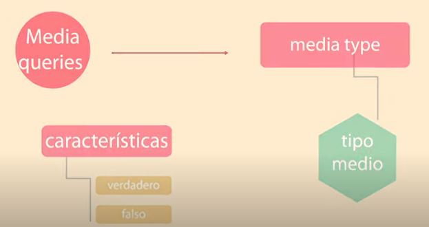

Media Queries de CSS
Las Media Queries son una de las grandes ventajas de CSS3, ya que permiten saber qué sistema se está visualizando una página web y, en función de ello, aplicar unas reglas de estilo u otras. Así, podemos servir un CSS personalizado, acorde las condiciones del navegador o dispositivo que nos visita. Como veremos a continuación, se han convertido en uno de los mejores recursos con los que cuentan los diseñadores para hacer sitios responsive.
Utilizar las Media Queries de CSS3 es muy sencillo, como todo el lenguaje CSS en general. De una manera descriptiva podemos indicar una condición y a continuación los estilos que deben aplicarse cuando ésta se cumpla. Para aclarar su sintaxis veremos una serie de ejemplos útiles e ilustrativos.
SEO
Significa Search Engine Optimization (optimización para motores de búsqueda) un profesional SEO llevará a cabo un análisis o auditoría para encontrar puntos a mejorar de un proyecto online y hacerlo amigable para los motores de búsqueda. El SEO se encargará de revisar aspectos como la arquitectura web, las palabras clave o los contendidos del sitio para determinar la mejor estrategia que lleve a la web a los primeros puestos en los resultados de búsqueda.
Enlaces de interes y referencias
El economista (2016).SEO.Tomado de.https://www.eleconomista.es/diccionario-de-economia/seo-search-engine-optimization
Arsys.(2017). Cómo utilizar las Media Queries de CSS3 para mejorar la visualización de nuestros proyectos web.Tomado de https://www.arsys.es/blog/programacion/media-queries-css3//
Web Empresa.(2020). Herramientas para un buen diseño Web Responsive.Tomado de https://www.webempresa.com/blog/herramientas-diseno-web-responsive.html.

2021-05-21© Yinneth Milena Gonzalez -- UNAD-- skype : ymgonzalezol1.Todos los derechos reservados.